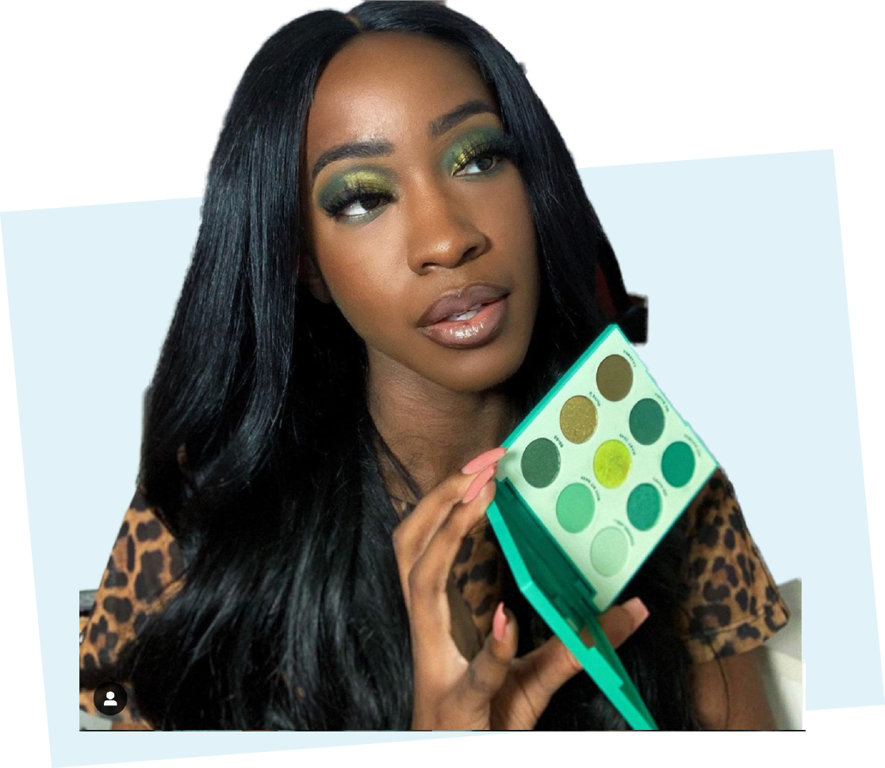
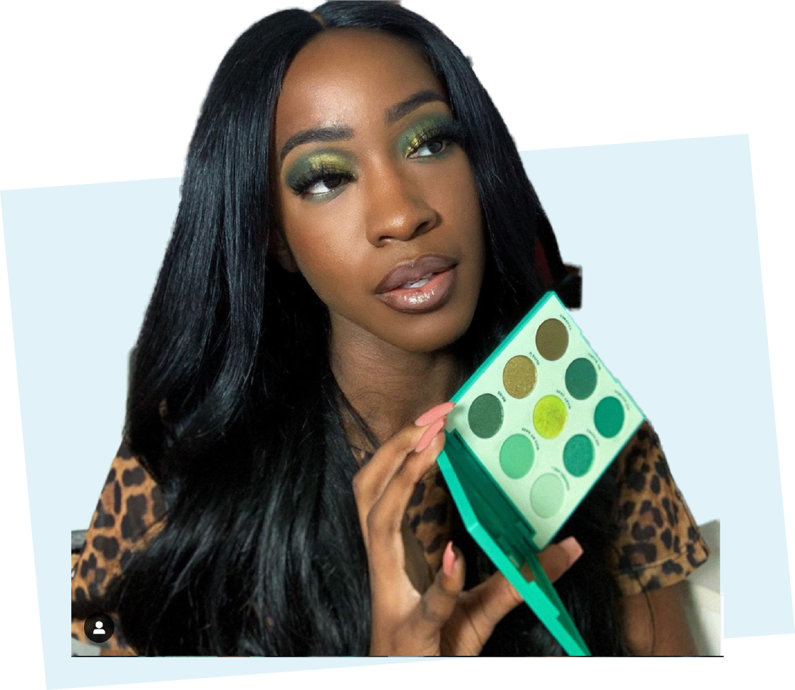
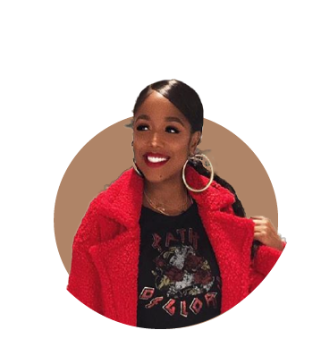
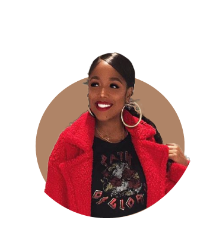

Foundation is a major buzz topic in the beauty industry right now, as brands are being dragged or celebrated online based on how inclusive (or not) their shade ranges are. The cycle seems to be pretty set: A brand releases a terrible shade range, and online outrage ensues. If it releases a good shade range — typically, the famous Fenty 40 or higher — people get rightfully excited.
Lots of beauty fans seem to measure companies' overall inclusivity by how deep their foundation colors go. Frankly, it's begun to feel like conversations in the beauty community about diversity start and end with that one complexion product.
But beauty YouTuber Too Much Mouth believes the inclusivity conversation is about way more than just foundation. In a video on her channel, she rightfully questions why beauty brands do not put as much effort into making the rest of their products work for dark skin as well.
Too Much Mouth's classy read began with one question found in her video title: "Dear brands, where are the bronzers and contour?"
Too Much Mouth has built a loyal YouTube following thanks to her thorough reviews on beauty products. Fans specifically go to her channel to get the tea on what works for darker skin. She's most popular for her Foundation Hunt series, in which she tries foundations by different brands to find what not only works for her deep complexion but what also suits her undertone and caters to her other skin needs.
Her subscribers have been requesting video round-ups of her favorite contour and bronzer shades, but the influencer has finally informed them that it cannot exactly happen.
"I'm always just like, 'See, the way my skin is set up, that's not a real thing here,'" she said. "I don't really have many options there, because it would really just be a video of me, like, showing you three products and that's it."
Instead, she decided to do a video about that specific struggle. Why can't she find many bronzers and contour products on the market that will actually show up on her skin tone?

She decided to go through the bronzer and contour products that she’s received in PR to show her followers exactly how real the struggle really is.
The influencer showed four bronzers: The Balm Take Home The Bronze ($9, The Balm Cosmetics), Rimmel London Natural Bronzer ($4, Walgreens), Becca x Chrissy Teigen Endless
Bronze and Glow ($38, Sephora), and the Ofra Midi Palette in Toasted Cashmere ($35, Ofra Cosmetics).
Each bronzer shade was obviously way too light for her, and all of them either disappeared into her skin completely or created ashy marks on her face.
The Rimmel London bronzer could not even be seen on the lighter side of her hand!
If a bronzer is so light that it doesn't show up on the light side of a person's palm, then it certainly isn't going to be dark enough to bronze (translation: darken and warm up) the actual face. Because Rimmel London actually has more shades of this bronzer available, it's probably that the company simply sent her the wrong shade, which is pretty unprofessional, too.
Can you spot the too-light mark on Too Much Mouth, courtesy of Becca Cosmetics?
It's to the left (your left) of her lip towards the bottom if you can't find it. Clearly, that bronzer doesn't really do any bronzing.
For full disclosure, this specific product only comes in one shade option. Becca Cosmetics does offer other bronzers that are labeled for medium and dark skin tones. I would recount how her experiment with contour shades worked out, but it was just more of the same.
Nyma Tang similarly criticized Anastasia Beverly Hills for its Powder Bronzers ($28, Sephora).
"You guys can clearly tell that this is not going to bronze anything on my face," she said about the darkest bronzer in the lineup. "I've used their foundation stick before, and I think it's a pretty good foundation stick, and I really like it," she shared.
"I just don't understand if you're doing bronzers, like why not look at your foundation range and see, 'OK, well, this is how deep our foundation goes... Why would we not apply that to our bronzers as well?"
While Nyma Tang ordered her Anastasia Beverly Hills products, it's important to note that Too Much Mouth received those ashy shades as PR gifts, which leads me to some serious questions.
Do these brands even care about the influencers of color whom they added to their PR lists, or are they just hoping to leverage these influencers' followers for a quick mention?
Why are brands even sending influencers of color any complexion products that do not even match their skin tones unless they are part of a full collection complete with shades that do? Are they even considering which shades work for their skin tones specifically? What exactly do any of these brands expect a dark-skinned influencer to do with a beige bronzer?
Nyma Tang experienced the same PR package exclusion when Jouer Cosmetics sent her a laughable foundation line full of beige hues and only two "deep" shades — none of which even remotely matched her complexion.
She promptly roasted the brand on Twitter along with the rest of her followers and fellow influencers. This was another perfect example of a brand only wanting to capitalize on Nyma Tang's fast-growing follower count without a single care about her as a dark-skinned beauty consumer or the inclusion that her platform stands for.
This dragging happened in 2017. By 2018, Jouer Cosmetics announced that it would expand its foundation line to 50 shades. It's obviously possible to make products for all skin tones, so why does it often take a social media dragging for that to happen?
Too Much Mouth did recommend two brands that she trusts to get deep bronzers right: Prime Beauty and ColourPop!
The swatch on her face is of the Chocolate Litty Bronzer ($21, Prime Beauty Cosmetics), which offers a good reference for how deep a bronzer needs to be in order to actually bronze her complexion.
People with darker skin actually have such a wide range of undertones that it's not a guarantee that the brands Too Much Mouth says work for her would even work for a good chunk of her followers. Therein lies the importance of there being lots of different options in the market.
The solution for all of this is for brands to stop trying to be diverse only for the sake of social media politics. Your inner panderer is showing.
Foundation and concealer are not the only beauty products that need to be formulated to suit a variety of different skin tones. And the products aren't even the entire problem.
It's no coincidence that once it became the norm to publicly hold brands accountable for discriminatory foundation shade ranges, brands started fixing their foundations and not much else. The point of that behavior is to pander to people of color, stay on the positive side of the news cycle, and look inclusive because looking inclusive is in — and being called out for colorism (even when that is what you are practicing) is out.
Inclusion shouldn't be about being trendy or cool; it should be about doing what's right and not blatantly perpetuating beauty standards and norms that oppress dark people within and outside the beauty industry.
From the product development to the marketing strategies, the beauty industry still has an entire system that needs to be unlearned before it can be a genuine welcoming space for people of color.
Next article:


 
